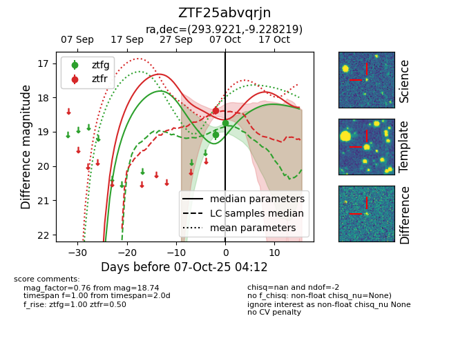
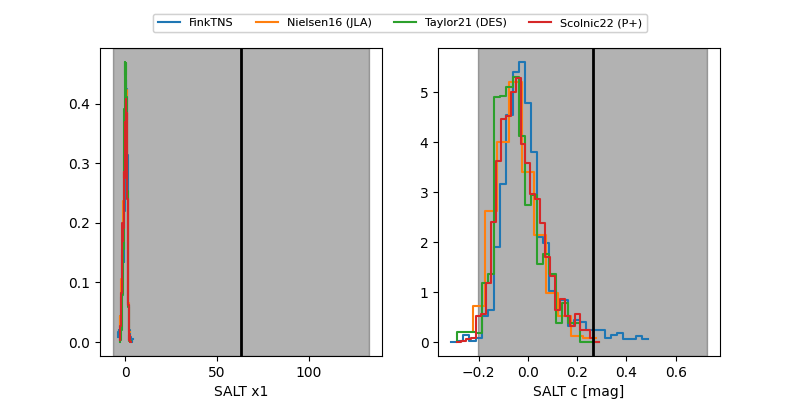

FINK: ZTF25abvqrjn
Lasair: ZTF25abvqrjn
ALeRCE: ZTF25abvqrjn
ZTF25abvqrjn (ztf,fink)
equatorial (ra, dec) = (293.9221,-9.22822)
galactic (l, b) = (29.6021,-13.98617)


last ztfg=18.74, ztfr=18.38
2 ztfg, 1 ztfr detections